Scientific Classification
| Kingdom | Animalia | Animalia | Animalia |
|---|---|---|---|
| Phylum | Chordata | Animalia | Animalia |
| Class | Mammalia | Animalia | Animalia |
| Infraclass | Placentalia | Animalia | Animalia |
| Superorder | Laurasiatheria | Animalia | Animalia |
| Mirorder | Euungulata | Animalia | Animalia |
| Order | Perissodactyla | Animalia | Animalia |
| Suborder | Ancylopoda | Animalia | Animalia |
| Superfamily | Chalicotherioidea | Animalia | Animalia |
| Family | Chalicotheridae | Animalia | Animalia |
Taxonomic note: Chalicotheres belong to the order Perissodactyla, the odd-toed ungulates, alongside horses, rhinoceroses, and tapirs. The Kaimeran fossil record demonstrates that the traditional appearance of the group can be misleading. Although chalicotheres superficially resemble clawed horses, their actual relationships place them closer to the tapir and rhinoceros side of the perissodactyl radiation. The resemblance to horses is therefore largely convergent.
01 · INTRODUCTION
Overview
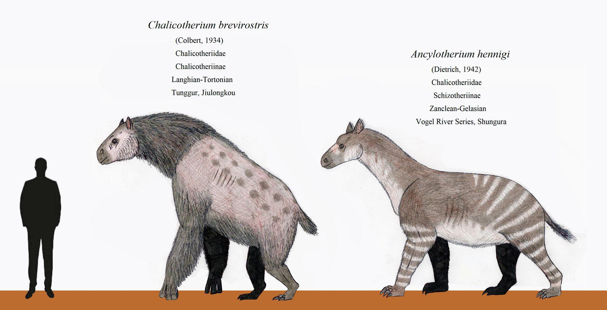
Chalicotheres are among the most unusual members of the panperissodactyl radiation on Kaimere. Unlike the familiar horses and rhinoceroses, which generally retained relatively conventional ungulate body plans, chalicotheres transformed the basic perissodactyl anatomy into something superficially resembling a giant ape, sloth, or clawed browsing mammal. Their most distinctive features are their elongated forelimbs, flexible arms, and large claws, which they use for pulling down vegetation, digging, manipulating branches, and fighting. On Earth, chalicotheres were an important but ultimately unsuccessful branch of the perissodactyls. On Kaimere, however, repeated harvests and subsequent evolutionary radiations gave them several opportunities to establish themselves.
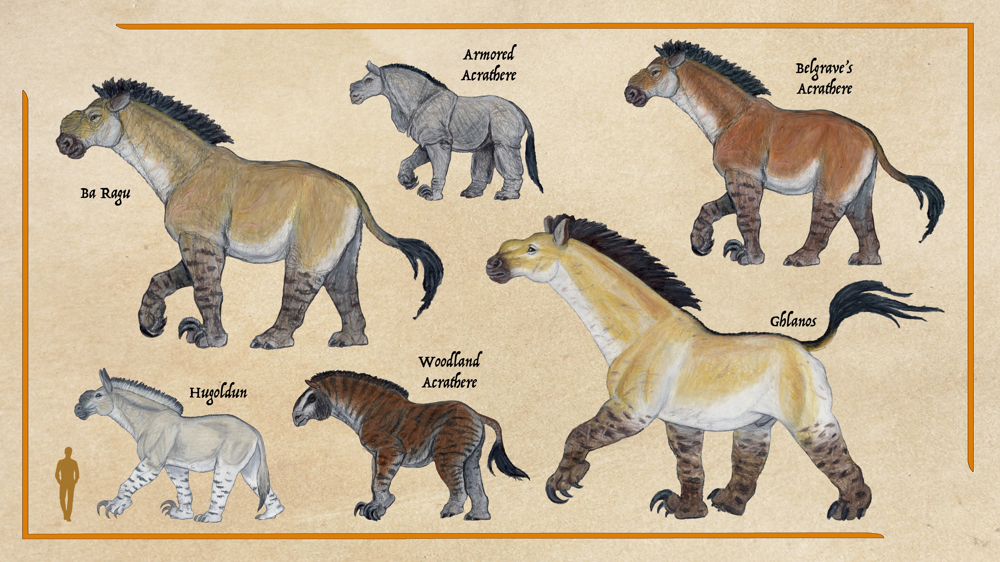
Kaimeran chalicotheres belong to two major evolutionary forms. The chalicotheriines were generally specialized forest browsers, retaining the characteristic ape-like proportions of their ancestors and ultimately producing the hugor of the Arvelith highlands. The schizotheriines, descended from animals comparable to Moropus, became the more spectacular branch. These animals evolved into the acratheres, or "fortress beasts," a lineage of enormous high browsers capable of reaching several tonnes and, in some species, truly gigantic sizes.
For much of Kaimere's recent history, chalicotheres were strongly affected by the changing balance between forests and open habitats. Their greatest period of success followed the Dynastic Extinction, when warm, wet forests covered much of the Known World and large terrestrial mammals were able to exploit niches left vacant by the collapse of the preceding ecosystem. Later, increasing aridity, shrinking forests, competition with giant ground sloths, and the return of titanosaurs to the Known World caused most of the major chalicothere lineages to disappear. By the Anchored Period, chalicotheres were represented primarily by enormous descendants of Moropus outside the Known World and by isolated relic populations. A later harvest approximately 1.5 million years ago, however, brought the last Earth chalicotheres, Hesperotherium, into Kaimere and ultimately produced the modern hugor. Approximately 300,000 years ago, another lineage returned to the Known World from Kairul in the form of the enormous ghlanos, Acratherium glanos.
The modern chalicotheres therefore represent not one uninterrupted evolutionary radiation, but several episodes of introduction, extinction, dispersal, and recolonization. Their history is closely tied to the unusual ecological instability of the Known World.
02 · DEEP TIME
Evolutionary History
Chalicotheres originated as an unusual branch of the perissodactyl radiation. The broader panperissodactyl group had already diversified into a remarkable variety of forms, including horses, rhinoceroses, tapirs, brontotheres, and numerous extinct lineages. Chalicotheres and their relatives, collectively grouped among the ancylopods, pushed this anatomical experimentation particularly far. Instead of evolving primarily toward cursorial locomotion, as many equids did, they developed long, flexible forelimbs and large claws. Their resulting proportions were convergent upon those of apes and ground sloths, despite their fundamentally different ancestry.
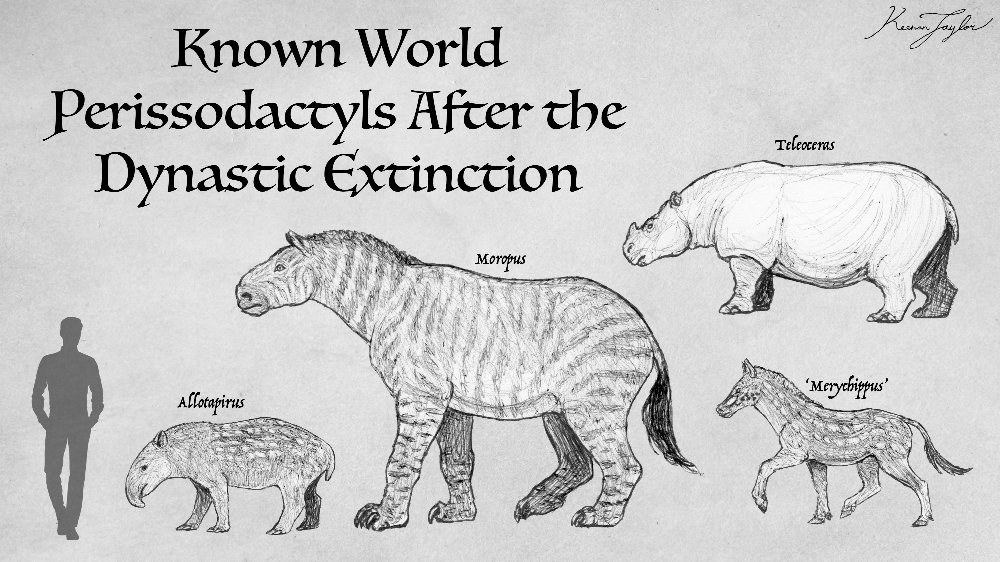
The first substantial introduction of chalicotheres to Kaimere occurred approximately 14 million years ago during the harvest associated with North American Middle Miocene fauna. Moropus is the best documented representative of this first major introduction. Multiple species, ranging from relatively small animals to very large forms, were either directly harvested or rapidly diversified in the aftermath of the harvest. At this time, the Known World was considerably warmer and wetter than modern Earth, and rainforests, wetlands, and mosaic forests dominated much of the landscape. These conditions proved exceptionally favorable for browsing mammals.
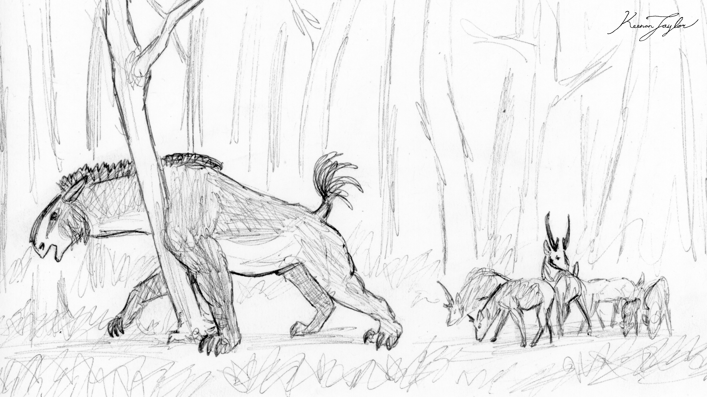
Chalicotheres became particularly successful during this early phase of the post-Dynastic-Extinction recovery. Their ability to feed above the level accessible to many other herbivores, combined with their unusual forelimbs and claws, allowed them to exploit vegetation that was difficult for more conventional ungulates to obtain. As ecological opportunities expanded, the chalicotheres increased in body size. The combination of abundant vegetation and relatively novel predatory communities appears to have favored increasingly massive forms.
The situation was different in Kairul, where chalicotheres also diversified. There, some lineages eventually became associated with the developing houze-prairie ecosystem. Acratherium evolved in Kairul as the houze prairie began developing during the Anchored Period. Although houze grass never became as ecologically dominant in Kairul as it later became in the Known World, it was still the dominant grass species. Its presence created sufficient browsing and mixed-feeding opportunities for an animal descended from predominantly browsing ancestors to become a mixed feeder.
The chalicotheres of the Known World experienced their first major decline as the climate became increasingly arid. The Great Drying transformed much of the Known World from humid forest and wetland into more open terrain. Horses flourished under these conditions, but chalicotheres did not. Their dependence on forest vegetation made them poorly suited to the expanding open environments. North American chalicotheres appear to have disappeared from the Known World around this time, potentially as a consequence of shrinking forests and competition with ground sloths entering the region from South America.
The disappearance of the forest chalicotheres did not represent a global extinction. During the subsequent Anchored Period, northern Ni'Khar and western Kairul supported their own native chalicothere lineages. These populations became increasingly unusual and, in some cases, enormous. By this stage, the chalicotheres of Kaimere were no longer especially diverse, but they survived primarily as gigantic descendants of Moropus.
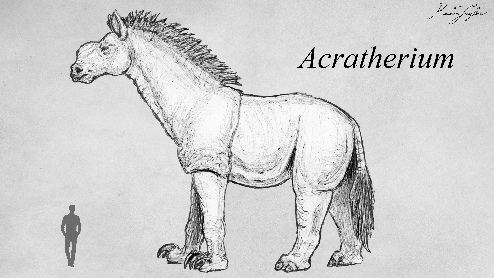
The schizotheriine branch proved particularly successful outside the Known World. These animals evolved into the acratheres, literally "fortress beasts," a clade of giant high browsers. Acratheres reached titanic proportions and remained comparatively conservative in body form after attaining their enormous size. Their height allowed them to exploit vegetation well above the reach of smaller browsers, while their enormous bodies made them difficult prey for all but the largest predators.

Their success in the Known World was nevertheless temporary. The return of titanosaurs introduced a major competitor into the same broad ecological space. These gigantic sauropods could transform forests simply through their feeding behavior and movements, opening woodland and consuming vegetation on a scale few mammals could match. As titanosaurs became widespread, the large chalicotheres increasingly lost access to the dense, elevated browsing niches on which they depended. The Known World populations subsequently disappeared, although their relatives survived elsewhere.
One surviving relic was the hugoldun, Hipponychus lazarus, of western Arvel. This species appears to descend from the ancient Arvelith acrathere radiation. Some literature has treated it as a surviving species of the Anchored Period genus Titanomoropus, but most classifications recognize it as a distinct genus, Hipponychus. The hugoldun represents one of the last remnants of the enormous Arvelith chalicothere radiation.
Another important lineage was the chalicotheriine Hesperotherium. Chalicotheriines had become extinct elsewhere, with the lineage experiencing its greatest success approximately 12 — 9 million years ago before declining during the Great Drying. Their specialization toward closed-forest browsing left them particularly vulnerable to the increasing aridity and habitat fragmentation of late Miocene Kaimere. Yet their lineage persisted outside the Known World and eventually received an extraordinary second opportunity.
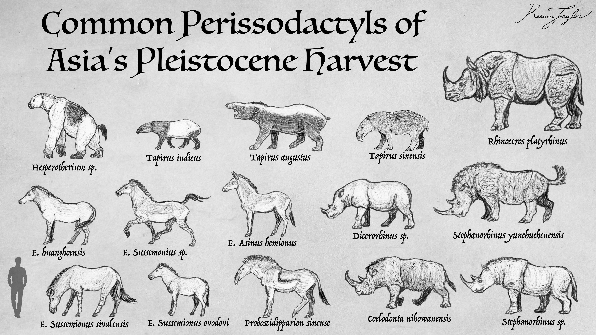
Approximately 1.5 million years ago, a major ecological upheaval associated with a dramatic change in Kaimere's axial tilt transformed global climates. The resulting extinction event devastated many existing ecosystems. At the same time, the Portal harvested a large assemblage of East Asian fauna, including the last chalicotheres surviving on Earth. At least seven rhinoceros species, almost a dozen equids, four tapirs, and the final Earth chalicotheres entered the Known World during this event.
As with many harvested organisms, the newly introduced chalicotheres initially experienced a population explosion before declining as ecosystems approached a new equilibrium. Most of these newly introduced taxa disappeared, but Hesperotherium established a persistent population in Arvel. The resulting animal, Hesperotherium hogor, became the modern hugor.
03 · SPECIES ACCOUNTS
Known Diversity
The following accounts document representative chalicotheres recorded in the encyclopedia. Select a species to consult its individual natural history and descriptive account.
Hugor
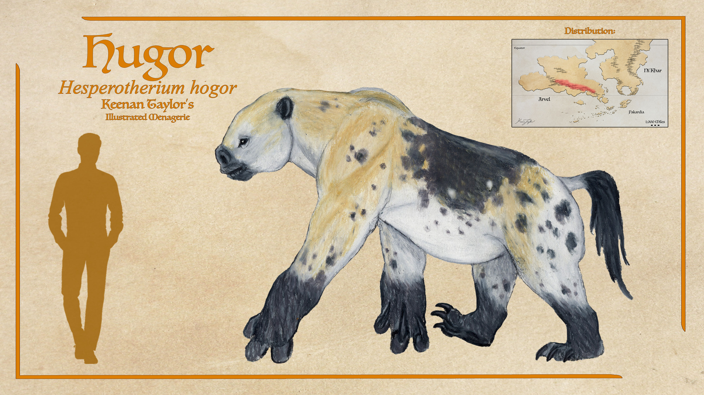
Hesperotherium hogor
The hugor is the last relic of this ape-like lineage specialized to closed forest browsing, and was given a second chance in Kaimere 1.5 million years ago. This species of Hesperotherium tends to live in small groups of related females, while a stallion or two lives alongside them. They are elusive animals living in a habitat that is difficult for naturalists to reach, so little is known about them with much confidence. Although not a major player in the ecology of the known world, they did find success in Arvel, especially in the uneven highland forests that were more closed due to the elevation preventing titanosaurs from clearing the trees. Hugors are known to browse in the highland forests that are too hot for the fauna of the highland steppes to the south, but too uneven for the titanosaurs. The river valleys are packed with fruit and delicate leaves perfect for these browsers.
Read species article →Hugoldun
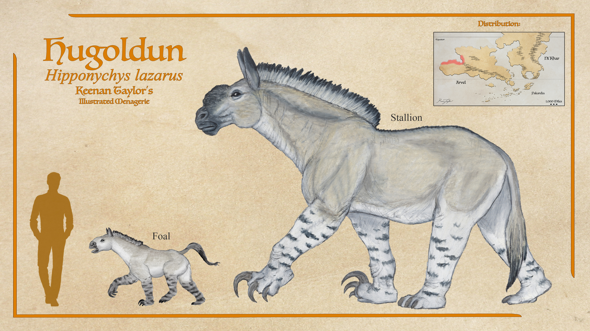
Hipponychus lazarus
Schizotheriine chalicotheres descended from animals like Moropus are much more successful in the realms beyond the known world. These became the acratheres, or fortress beasts, a clade of giant high browsers that have changed very little since they reached titanic sizes thirteen million years ago. They enjoyed a brief hayday in prehistoric Kaimere, though the return of titanosaurs directly competing for their niche appears to have resulted in their known world decline and eventual extinction. However, dispersing afforded more opportunity. In western Arvel, the hugoldun is an acrathere that appears to be a relic of the original Arvelith clade, and while some literature describes it as the same prehistoric genus Titanomoropus from the Anchored Period, most maintain its status as a distinct genus Hipponychus.
Read species article →Ghlanos
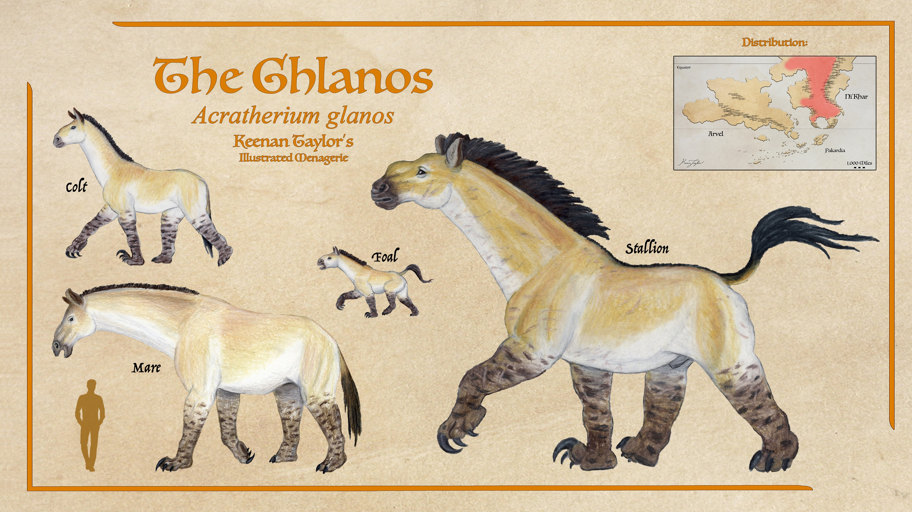
Acratherium glanos
The acratheres returned to the Known World around 300 kya in the form of Acratherium itself: the ghlanos. Stallions of this giant perissodactyl can reach 17 tons, making them among the largest terrestrial mammals in Kaimere alongside a few proboscideans and the hukolgur ground sloth. That said, most stallions are not this large, with average males being 9 to 12 tons. Mares tend to be between 4 and 7 tons, though some can reach the lower end of stallion sizes. Herds typically comprise of numerous related mares, one to three related stallions, and their young. Herds are lead by elder mares and the stallions defend. Uktan, multi-ton giant megaraptorans, are the only threat to adult ghlanos. Pairs can reliably bring down the ghlanos, though dominant stallions are often able to best uktan in a brawl.
Read species article →Northern Acrathere
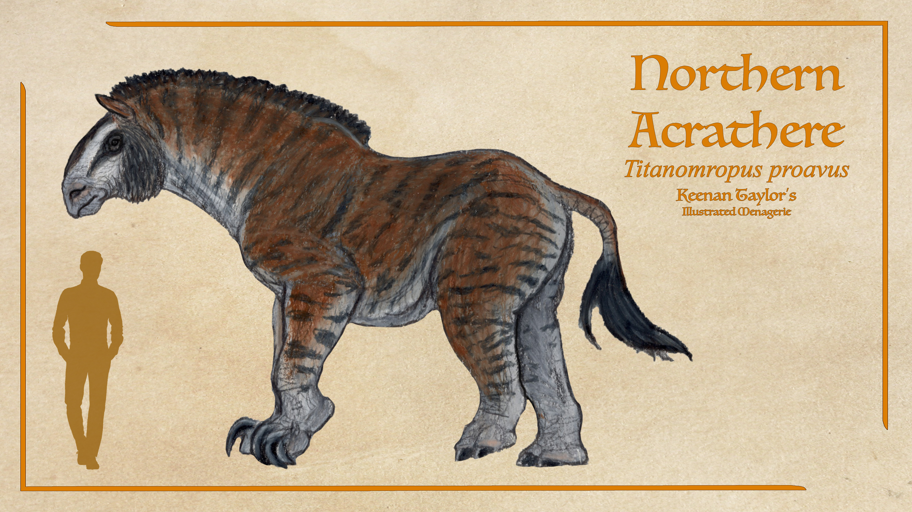
Titanomropus proavus
Though not especially diverse beyond the Known World, there are other species in northern Ni'Khar and in Kairul. One might expect the acrathere found in the coastal forests of northern Ni'Khar beyond the Known World to be the closest cousin of the ghlanos, but the ghlanos' lineage is of Kairulan origin. Instead, this species found in the northern woodlands of Ni'Khar is thought to be the most basal of the acratheres. Titanomropus proavus or the forest acrathere is a smaller animal, around four tons for mares and five to six for stallions. They are thought to offer good insight into what these animals were like during the Warring Clades Period. They keep sanctuary in forests, doing most of their foraging by night and sleeping in shade during the day.
Read species article →Ba Ragu
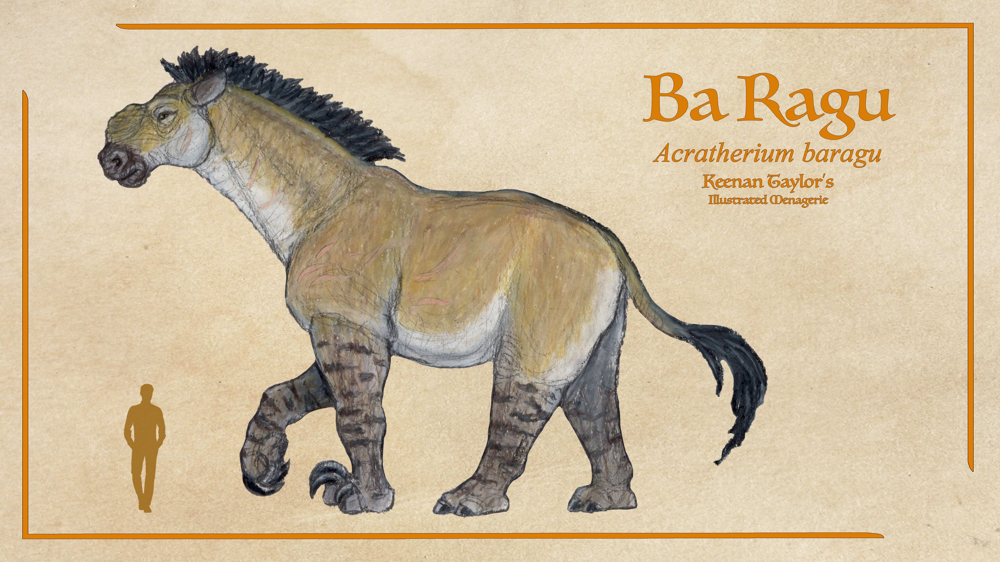
Acratherium baragu
There are two other species of Acratherium in Kairul aside from the ghlanos. South of the equator, on the Fenrir Prairie, is a somewhat smaller cousin of the ghlanos: Acratherium baragu. Though notably smaller in linear dimensions compared to the ghlanos, which is specialized for efficient travel over sparse terrain, the ba ragu is almost as heavy due to a compact frame. Otherwise they are quite similar to the ghlanos, with a mixed-feeder diet, living in fairly large herds of a dozen or so mares and their young guarded by one to three related stallions.
Read species article →Belgrave's Acrathere

Acratherium belgravei
Acratherium belgravei or Belgrave's acrathere is an acrathere found in the forests of northern Kairul. It is assumed they represent how the ghlanos would have looked and lived around six million years ago before dispersing out to the prairies. They are quite large animals, with five ton mares and eight to ten ton stallions. They tend to live in smaller herds than their open territory cousins and only seem to eat grass on rare occasion.
Read species article →Armored Acrathere
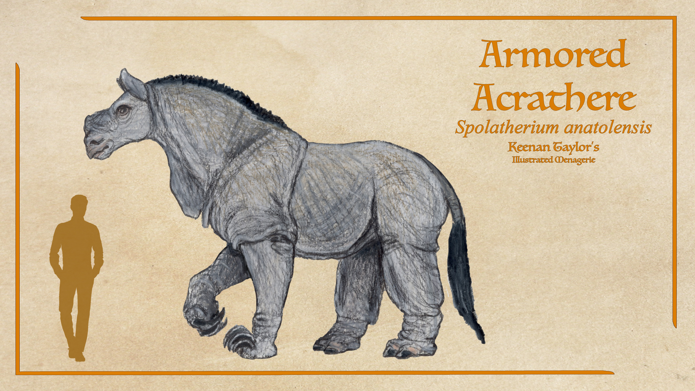
Spolatherium anatolensis
Spolatherium is a genus with at least one species in the equatorial jungles. They are the smallest of the acratheres. Their hide looks like thick armor, but it's not as robust as it appears, instead being more wrinkled to increase their surface to volume ratio to shed excess heat in the extreme temperatures of their natural habitat and to trap water to further aid in cooling. It does offer some protection as the thick loose hide does make it difficult for some predators to establish a good hold, though serrated theropod teeth can tear through instead. They have the longest proportional claws of any chalicothere, using these as weapons against each other and to fend off predators. The primary use, however, is in dredging up wetland vegetation that then floats to the surface for effortless consumption.
Read species article →04 · CLASSIFICATION
Taxonomic Notes
Chalicotheres belong to the broader group Panperissodactyla, the odd-toed ungulates. Panperissodactyls are characterized by the independent evolution of an ungulate locomotor system and, in many lineages, the reduction of the weight-bearing toes to three or one. The surviving Earth perissodactyls are traditionally divided among the equids, rhinocerotids, and tapirs, but the fossil history of the group was considerably more diverse. Chalicotheres and their relatives, collectively associated with the ancylopod radiation, represent one of the most unusual branches of this evolutionary history.
The distinctive chalicothere body plan is characterized by a profound modification of the forelimbs. Rather than being optimized primarily for rapid terrestrial locomotion, the forelimbs became elongated and highly mobile, terminating in large claws. These claws could be retracted and were used for manipulating vegetation, pulling down branches, digging, combat, and defense. The resulting animals possessed a vaguely sloth-like or ape-like silhouette despite being perissodactyls.
The Kaimeran chalicotheres are divided in the surviving fossil record into two major forms of specialization. Chalicotheriines were primarily forest browsers and included animals related to the Earth genus Moropus. Their Kaimeran history was comparatively short-lived, and the lineage eventually disappeared from the Known World. Schizotheriines, by contrast, produced the lineage known as the acratheres, or "fortress beasts." These animals became enormous high browsers and persisted into the modern Kaimeran fauna.
The taxonomic relationship between the various Kaimeran forms remains complicated because several lineages underwent substantial convergent evolution. Some species that look remarkably similar are not necessarily close relatives, while the familiar division between "horse-like" and "rhino-like" forms does not adequately represent their actual evolutionary relationships.
The Assembly commonly applies the terms stallion and mare to male and female chalicotheres because of their superficial resemblance to horses. These terms are conventional rather than evidence of equid ancestry. The morphology of the animals indicates that their resemblance to horses is primarily convergent.